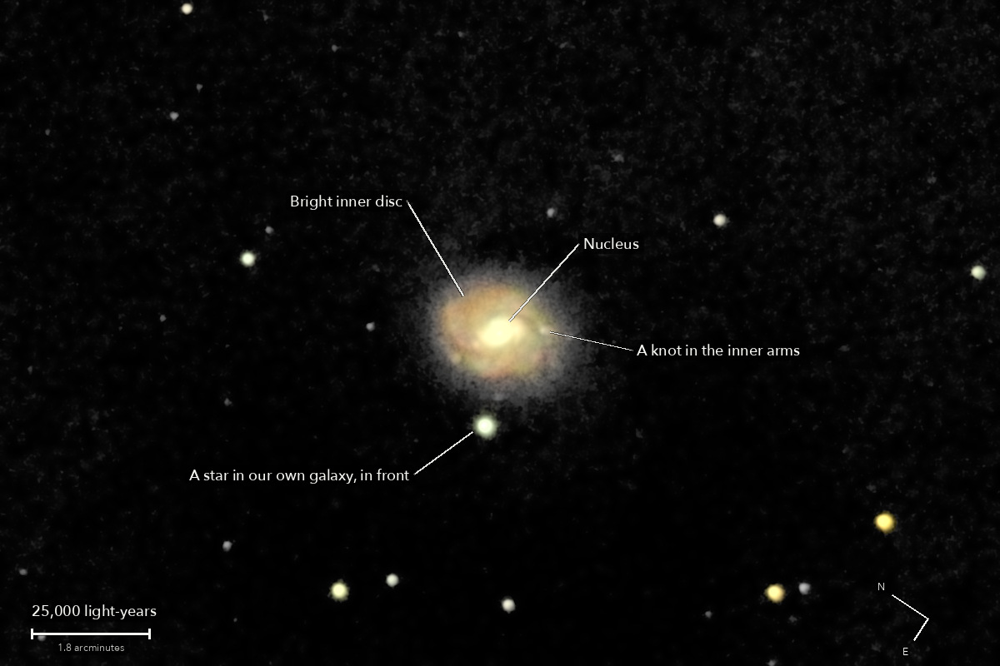

Messier 77
NGC 1068, a spiral galaxy in Cetus with an active centre
A spiral galaxy seen nearly face on, and one of the nearest and brightest galaxies with an active centre. Deep in its middle, gas is falling toward a black hole of roughly ten million Suns and blazing as it falls, which helps make the centre shine like a star. Galaxies like this are called Seyfert galaxies, after Carl Seyfert, who described them in 1943.
What you are looking at

Swipe sideways to see the rest. Tap the picture for full size.
- Distance
- About 47 million light-years (not well known: estimates run from 33 to 62 million)
- This picture spans
- Roughly 200,000 light-years; the bright disc shown is roughly 35,000 across
- The light left
- Roughly 47 million years ago, when the ancestors of whales still walked on land
- Honest note
- This picture shows the bright heart of the galaxy only. Its faint outer arms and ring, about three times as wide, are not seen
Technical details
29 of 31 frames of 15 s. 7.25 minutes of light on one field, lower in the sky than the night's other pictures.
Equipment
- Telescope
- Celestron 8SE Schmidt-Cassegrain: 203 mm aperture, 2,082 mm focal length by plate solve of this stack, f/10.3
- Camera
- Sony a6000, stock, at prime focus: APS-C 23.5 x 15.6 mm, 6000 x 4000, 3.9 micron pixels, RAW
- Mount
- Sky-Watcher EQ6-R, unguided. Set down without polar alignment, about 5 degrees off the pole; aligned from four plate-solved photos (about 1 arcminute), both axes driven from that model
Acquisition
- Exposures
- 29 x 15 s at ISO 3200: 7.25 minutes. The core did not clip: its brightest pixel in any frame is 24 percent of the ceiling. Nothing painted or repaired
- Frames
- 31 taken, 29 kept. The first frame after the slew was dropped by rule; one was trailed as the field jumped across it. The 29 kept are within 2.4 percent of the run's star brightness
- Sampling
- 0.777 arcsec per pixel: one pixel per 2 x 2 colour cell, never enlarged. Stars 4.8 arcsec wide (half-flux): softer than the night's other pictures, because this one was lower in the sky
- Field
- 15.5 x 10.4 arcmin: a 1200 x 800 crop round the nucleus from a stack of 38.4 x 25.6 arcmin, nothing resampled, as the camera saw it (north 56 degrees anticlockwise of up)
- When
- 13 October 2026, after midnight, over 20 minutes. About 50 degrees up
- Field rotation
- 0.43 degrees over the run, because the polar axis is about 5 degrees off; corrected in registration (rotation and shift on 45 or 46 stars, 0.24 to 0.41 sensor px rms)
- Dispersion
- The air is a prism this low: red sat 0.43 and blue 0.69 sensor px either side of green, measured on stars in ten frames. Taken out in the one resampling; under 0.05 px is left in the stack
- Calibration
- No darks and no flat frames were taken. The night's flat, built from the open sky of the NGC 891 run, and 94 dust shadows it left, measured on this run's own sky and divided out. Hot pixels from the run itself (5,600 to 6,400 per colour plane)
Processing
- Stacking
- RAW colour planes (no demosaic), hot pixels by 3 x 3 median, registered on stars with rotation, sigma-clipped weighted mean. One sky constant per colour per frame; in the picture only, a sky plane per colour is subtracted as well. Noise 4.8 to 5.2 times lower than one frame (5.4 expected from the weights)
- Finish
- The camera's daylight white balance and colour matrix, no star-colour calibration. Colour only where the light is over 8 DN, the bright disc and the stars; the fainter edge is grey. Arcsinh stretch, black at the 78th percentile, gamma 0.9, S-curve 0.2, saturation x 1.15. The dark sky is set near black and smoothed (bilateral, 5 px), by choice: 8.6 percent of the picture is exactly black
- Picture size
- 1200 x 800 pixels
- Software
- Capture and mount: Observatory (Elixir on a Raspberry Pi 3). Stacking: numpy, OpenCV, rawpy. Plate solving: astrometry.net. Stacked from the camera's RAW frames. Nothing generated.
What the picture shows
- What is real
- The star-like nucleus on a short bright bar. The bright inner disc, 2.5 arcmin across: followed while its light is over 3 times the spread of blank sky, the same in the odd and the even frames. The inner arms as a brighter oval with knots
- Not seen
- The faint outer arms and the outer ring, 2.2 to 3.6 arcmin from the nucleus: the light there measures zero or less. The sky within about 4 arcmin of the galaxy sits about 1 percent low, because the night's flat was fitted where NGC 891 hid the middle of the sensor. That is what hides the outer disc
Copy for Reddit
Everything above, in the Markdown r/astrophotography posts use. Paste it into the post's text in Markdown mode.
© 2026 Brad Gessler · Celestron 8SE (8 inch, f/10.3) and Sony a6000 on an EQ6-R · San Francisco Bay Area · night of 12 October 2026
© 2026 Brad Gessler. The pictures and the words are his own; all rights reserved.